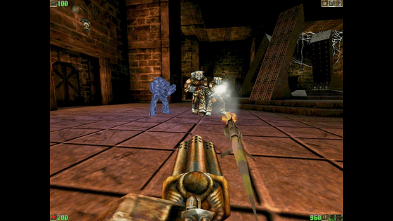
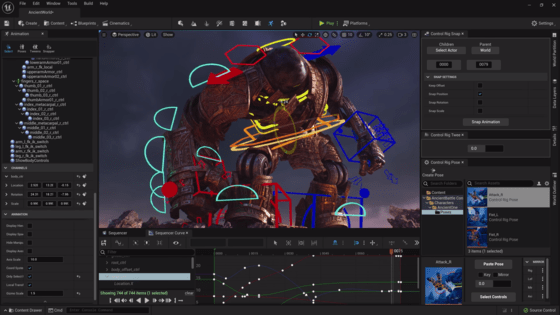

Qui est Tim Sweeney ?
- Timothy D. Sweeney est un programmeur et entrepreneur américain né en 1970.
- Fondateur d'Epic Games, il est connu pour son travail sur ZZT et le moteur Unreal Engine.
- Son engagement pour l'innovation technologique et sa vision à long terme ont permis à Unreal Engine de devenir un pilier de l'industrie.
- En 2017, il reçoit un Game Developers Choice Award pour l'ensemble de sa carrière.
Naissance d'un Moteur Révolutionnaire
La naissance d'Unreal Engine est le fruit du travail acharné de Tim Sweeney, fondateur d'
Epic Games.
L'aventure commence dans les années 1990, alors qu’il décide de créer un
moteur de jeu révolutionnaire.
En 1998, le monde découvre pour la première fois les capacités de ce moteur avec la sortie du jeu
Unreal,
marquant le début d'une saga qui allait bouleverser l'industrie du jeu vidéo.

Évolution et Avancées Technologiques
Depuis ses débuts, Unreal Engine n'a cessé de se réinventer.
Chaque nouvelle version apporte des innovations : rendu graphique, réalité virtuelle, outils de développement, etc.
Cette capacité d'évolution constante a permis à Unreal Engine de rester en tête de l'industrie.
Fonctionnement Technique d'Unreal Engine
Architecture et Langage de Programmation
Unreal Engine repose sur une architecture robuste conçue pour offrir une flexibilité maximale.
Il combine plusieurs langages : C++,
Blueprint
et HLSL.
Cela permet d’exploiter la puissance du Ray-Tracing,
simulant la lumière et les reflets pour un rendu réaliste.
Utilisation et Développement
Unreal Engine est utilisé par une vaste communauté : studios indépendants, grandes entreprises, simulateurs VR...
Il offre des outils pour la modélisation 3D, l’animation, le gameplay, et la simulation physique.
Le Cœur Créatif d'Unreal Engine
Unreal Editor est une interface permettant de créer et modifier du contenu 3D facilement.
Il est utilisé avec 3ds Max pour exporter modèles, textures et animations vers Unreal.
Son architecture modulaire permet d’adapter le flux de travail à chaque projet.

Du Triomphe Actuel à l'Aventure Future
Qu'a permis Unreal Engine ?
Comment parler d'Unreal Engine sans citer Fortnite ?
Ce jeu a propulsé la renommée du moteur à un niveau mondial.
Unreal Engine est désormais un pilier du divertissement interactif, utilisé par de nombreux studios.
Grâce à son évolution continue, Unreal Engine repousse les limites de la créativité.
Projection sur l'avenir
Epic Games a lancé le projet Ninety Days,
où des artistes ont créé 40 environnements en trois jours chacun avec Unreal Engine 5.
Un défi technique et artistique impressionnant.